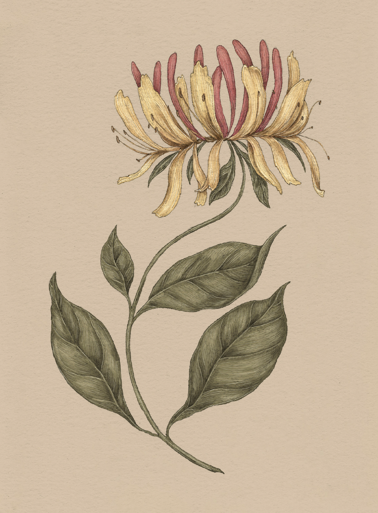

The Language of Flowers
Honeysuckle

Honeysuckle
Lonicera
Meaning
- Devotion
- Affection
Origin
Victorians claimed that sleeping with honeysuckle flowers under your pillow would cause you to dream
of your true love. This belief may have originated with Shakespeare's A Midsummer Night's Dream,
in which Titania compares her slumbering with Bottom to the way a sweet honeysuckle encircles a barky
elm: "Sleep thou, and I will wind thee in my arms . . . So doth the woodbine the sweet honeysuckle /
Gently entwist; the female ivy so / Enrings the barky fingers of the elm. / O, how I love thee! How
I dote on thee!"
Pair With
- Orchid to show gratitude for a gift you treasure
- Cornflower to show your true devotion to a loved one